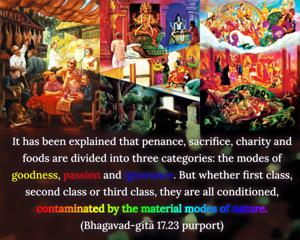
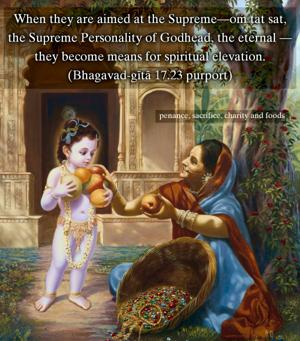
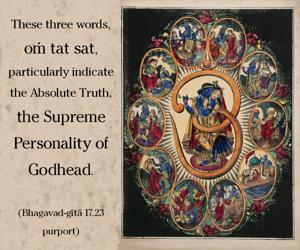
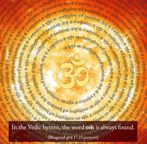
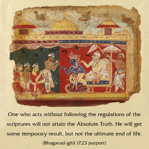

From the beginning of creation, the three words oṁ tat sat were used to indicate the Supreme Absolute Truth. These three symbolic representations were used by brāhmaṇas while chanting the hymns of the Vedas and during sacrifices for the satisfaction of the Supreme.





It has been explained that penance, sacrifice, charity and foods are divided into three categories: the modes of goodness, passion and ignorance. But whether first class, second class or third class, they are all conditioned, contaminated by the material modes of nature. When they are aimed at the Supreme – oṁ tat sat, the Supreme Personality of Godhead, the eternal – they become means for spiritual elevation. In the scriptural injunctions such an objective is indicated. These three words, oṁ tat sat, particularly indicate the Absolute Truth, the Supreme Personality of Godhead. In the Vedic hymns, the word oṁ is always found.
One who acts without following the regulations of the scriptures will not attain the Absolute Truth. He will get some temporary result, but not the ultimate end of life. The conclusion is that the performance of charity, sacrifice and penance must be done in the mode of goodness. Performed in the mode of passion or ignorance, they are certainly inferior in quality. The three words oṁ tat sat are uttered in conjunction with the holy name of the Supreme Lord, e.g., oṁ tad viṣṇoḥ. Whenever a Vedic hymn or the holy name of the Supreme Lord is uttered, oṁ is added. This is the indication of Vedic literature. These three words are taken from Vedic hymns. Oṁ ity etad brahmaṇo nediṣṭhaṁ nāma indicates the first goal. Then tat tvam asi (Chāndogya Upaniṣad 6.8.7) indicates the second goal. And sad eva saumya (Chāndogya Upaniṣad 6.2.1) indicates the third goal. Combined they become oṁ tat sat. Formerly when Brahmā, the first created living entity, performed sacrifices, he indicated by these three words the Supreme Personality of Godhead. Therefore the same principle has always been followed by disciplic succession. So this hymn has great significance. Bhagavad-gītā recommends, therefore, that any work done should be done for oṁ tat sat, or for the Supreme Personality of Godhead. When one performs penance, charity and sacrifice with these three words, he is acting in Kṛṣṇa consciousness. Kṛṣṇa consciousness is a scientific execution of transcendental activities which enables one to return home, back to Godhead. There is no loss of energy in acting in such a transcendental way.